Hi! I am now an associate professor at Shenzhen University. I received my Ph.D degree in Computer Science from Peking University. At Shenzhen University, I lead the Spatial Creative Intelligence & Interaction (SCII, /skaɪ/) research group. The passion of our group lays in the AI generation of creative spatial visualizations, mainly stylized maps and map-related spatial applications. Our latest work towards our passion are Abstraction in Style, Layered Image Vectorization, Image-space Collage. Before, I have several works in general visualization and visual analytics: (1) design intuitive visualization, e.g., UnitoPia, Winglets, Sticky Links, Interaction+. (2) understand visual designs, e.g., Visual Information Flow in Infographics, JND Modeling in Charts; (3) address urban problems in visual analytic manner, e.g., a series of trajectory analysis methods.
: ) I am looking for graduate students (of CS Master Program) who share a strong interest with what I am doing! Please contect me with your resume reflecting your passion.
News
2026.Jul
🎉 Two works UnitoPia and DiffGraph are accepted in VIS 2026!!! Congratulations to Xinghui and the team!2026.Mar
Our works AiS and Semantic-structure Chart are accepted in SIGGRAPH 2026!!! Congratulations to the team!2025.Api
Our work Image-space Collage is conditionally accepted in SIGGRAPH 2025, congratulations to Zhenyu!2025.Feb
Our work Layered Vectorizatoin is accepted in CVPR 2025, congratulations to Zhenyu and Jianxi!- ... more >>
Recent Projects
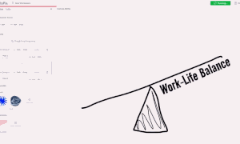
UnitoPia: Interactive Construction of Pictorial Unit Visualization using a Contain-and-Fill Model
VIS IEEE VIS, 2026
[Paper (15.5 MB)]
[Project Homepage]
[Source Code]
[Demo Video (MP4, 27.6 MB) ]
We introduce UnitoPia, an interactive tool for easy construction of pictorial unit visualization via 'contain-and-fill' design model with four tangible concepts: mark, container, emitter and force.
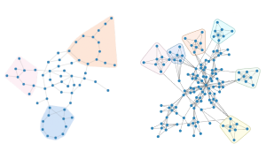
DiffGraph: Controllable Graph Layout Generation with Diffusion Models
VIS IEEE VIS, 2026
[Paper (19.85 MB)]
We introduce DiffGraph,a controllable graph layout generation method, which utilizes a denoising diffusion probabilistic model, with graph neural networks serving as its core architecture.
Abstraction in Style: Beyond Texture and Color
SIGGRAPH ACM SIGGRAPH, 2026
[Paper (46.6 MB)]
[Project Homepage]
[Source Code]
We introduce Abstraction in Style (AiS), a generative framework that separates structural abstraction from visual stylization, which supports more controllable and expressive style transfer.
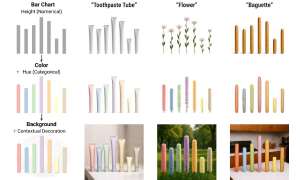
Semantic-Structural Alignment for Generative Pictorial Charts
SIGGRAPH ACM Transactions on Graphics, 2026.
[Paper (42.1 MB)]
[Project Homepage]
We propose a semantic-structural alignment framework for generating pictorial charts, where quantatitive data can be encoded and visually represented via realistic-style visual elements.
Cycle-Consistent Tuning for Layered Image Decomposition
CVPR Conference on Computer Vision and Pattern Recognition, 2026.
[Paper (28.7 MB)]
[Project Homepage]
[Source Code]
We present an in-context image layered separation that fine-tune large diffusion foundation models with a cycle-consistent strategy that jointly trains decomposition and composition models.
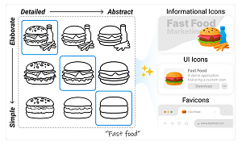
Iconix: Controlling Semantics and Style in Progressive Icon Grids Generation
CHI Proceedings of the CHI Conference on Human Factors in Computing Systems, 2026.
[Paper (26.5 MB)]
We introduce a human-AI co-creative system that generates a grid of icons in a coherent style, along two axes: semantic richness (what is depicted) and style diversity (how much detail).
Image-Space Collage and Packing with Differentiable Rendering
SIGGRAPH ACM SIGGRAPH, 2025
[Paper (26.2 MB)]
[Project Homepage]
[Source Code]
We introduce a versatile image-space collage technique designed to pack geometric elements into a given shape, and demonstrate its diverse visual expressiveness in various applications.
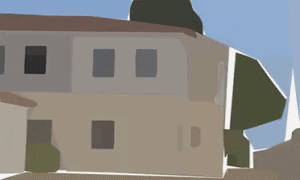
Layered Image Vectorization via Semantic Simplification
CVPR Conference on Computer Vision and Pattern Recognition, 2025.
[Paper (41.8 MB)]
[Project Homepage]
[Source Code]
We present a layered image vectorization technique with image simplification, that reconstructs the raster image as layer-wise vectors from semantic-aligned macro structures to finer details.
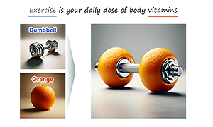
Creative Blends of Visual Concepts
CHI Proceedings of the 2025 CHI conference on human factors in computing systems, 2025.
[Paper (25.3 MB)]
We Creative Blends, an AI-assisted design system that leverages metaphors to
visually symbolize abstract concepts by blending elements from two distinct visual concepts into a single
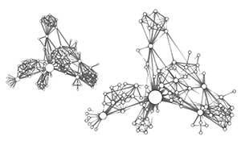
Sticky Links: Encoding Quantitative Data of Graph Edges
PacificVisTVCGIEEE Transactions on Visualization and Computer Graphics, 2024.
[Paper (0.4 MB)]
[Source Code (Python)]
[My Talk at PacificVis 2024 (32.4 MB)]
In this work we propose a new edge drawing for node-link diagram, Sticky Links. Using the metaphor of stickiness, sticky links can be used for expressive edge quantatitive encoding.
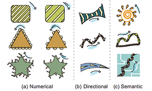
Enhancing Static Charts with Data-driven Animations
TVCGIEEE Transactions on Visualization and Computer Graphics, 2022.
[Paper (1.82 MB)]
[Project Homepage ]
[Source Code (Javascript)]
In this work we propose data-driven animation to bring static charts to life, with the purpose of encoding and emphasizing certain attributes of data, specifically of non-temporal data.
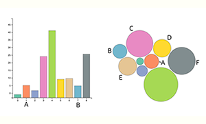
Modeling Just Noticeable Differences in Charts
VISTVCGIEEE Transactions on Visualization and Computer Graphics, 2021.
[Paper (2.1 MB)]
[Experiment Data ]
[My Talk at VIS 2021 ]
In this work, we model the perception of Just Noticeable Differences (JNDs) in charts with two variables (intensity and distance) and find that JND grows as the exponential function.
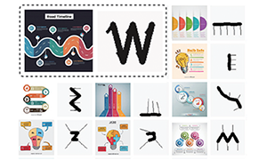
Exploring Visual Information Flows in Infographics
CHI Proceedings of the 2020 CHI conference on human factors in computing systems, 2020.
[Paper (2.0 MB) ]
[ InfoVIF dataset ]
[Demo Video (MP4, 21.1 MB) ]
[My Talk at CHI 2020 ]
In this work, we propose Visual Information Flow (VIF) in infographics and present an framework to extract it in a wild dataset InfoVIF, by which the VIF design patterns are explored.
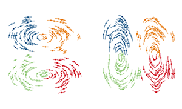
Winglets: Visualizing Association with Uncertainty in Multi-class Scatterplots
VISTVCGIEEE Transactions on Visualization and Computer Graphics, 2019.
[Paper (2.7 MB) ]
[Source Code (Python) ]
[My Talk at VIS 2019 ]
In this work, we present Winglets, which are designed as a pair of dual-sided strokes, leveraging the Gestalt principle of Closure to shape the perception of the form of the clusters.
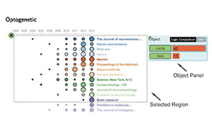
Interaction+: Interaction Enhancement for Web-based Visualizations
PacificVisProceedings of IEEE Pacific Visualization Symposium, 2017.
[PDF (1.5 MB) ]
[MP4 (14.9 MB)]
In this work, we present Interaction+, an application-independent tool that enhances the interactive capability of existing web-based visualizations without accessing its data.
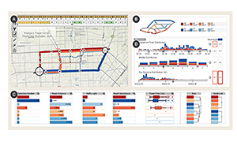
Visual Analysis of Multiple Route Choices based on General GPS Trajectories
IEEE Transactions on Big Data, 2017.
[Paper (1.2 MB) ]
[MP4 (6.1MB)]
In this work, we present a visual analytic system, to help users interact with the large-scale trajectory data, compare different route choices, and explore the underlying reasons.
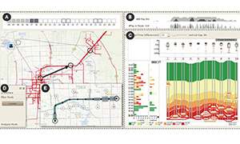
TrajRank: Exploring Taxi Travel Behaviour on a Route by Trajectory Ranking
PacificVisProceedings of IEEE Pacific Visualization Symposium, 2015.
[PDF (1.9 MB) ]
[MP4 (3.6 MB)]
In this work, we present a visual analytic system TrajRank, based on the design of parallel coordinates, that supports to interactively study the travel pattern of single route.
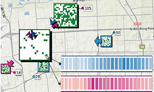
OD-Wheel: Visual Design to Explore OD Patterns of a Central Region
PacificVisProceedings of IEEE Pacific Visualization Symposium, 2015.
[PDF (1.2 MB)]
[MP4 (14.9 MB)]
In this work, we present a visual analytic design OD-Wheel, that supports users to interactively filter trajectories and understand the Origin-Destination (OD) patterns of a city.
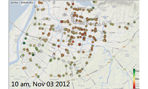
Visual Exploration of Sparse Traffic Trajectory Data
VISTVCGIEEE Transactions on Visualization and Computer Graphics, 2014.
[PDF (1.5 MB)]
In this work, we present a visual analytic system to interactively explore a
special kind of transportation data, i.e. sparse traffic trajectory data, collected by transportation cells.
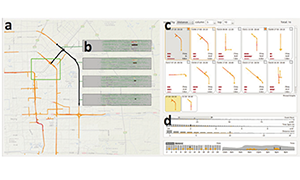
Visual Traffic Jam Analysis Based on Trajectory Data
VISIEEE Visualization 2013.
[PDF (1.5 MB)]
[MP4 (18.3 MB)]
In this work, we present a visual analytic system that can extract urban traffic congestion from taxi GPS trajectories and explore their propergations in spatio-temporal space.